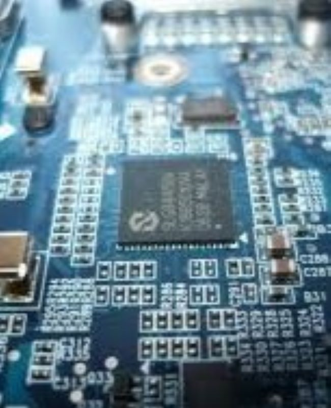
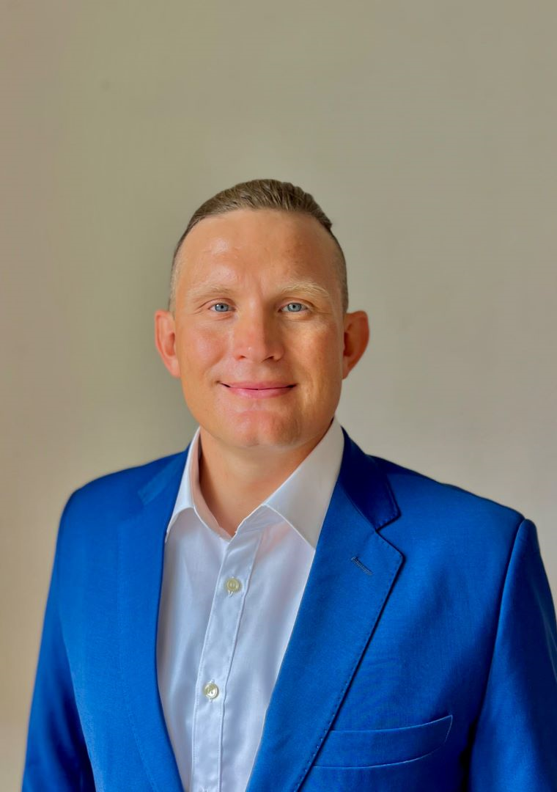

My Work


Software Development Leader

Experienced leader in managing complex embedded software projects and delivering electronics systems, driving improvements through all phases of the product development, through innovative approaches in project management, software design and architecture, continuous delivery and testing. My international experience and collaborative mindset enable me to build strong, effective partnerships with both internal and external stakeholders.
Skills
Experience
Education
Languages
Hobbies
Publications
I design robust and scalable software architectures that align with your business goals. My emphasis is on creating modular systems that facilitate easy integration and maintenance, ensuring a seamless user experience and efficient performance.
Learn More about Software ArchitectureI implement real-time operating systems that ensure timely and predictable responses in critical applications. My approach emphasizes precision and reliability, allowing systems to manage complex tasks effectively while maintaining optimal performance under demanding conditions.
Learn More about Embedded SystemsI develop innovative embedded systems that bridge the gap between hardware and software. My focus is on optimizing performance and reliability, enabling devices to operate efficiently while delivering exceptional functionality tailored to your needs.
Learn More about Real-Time Operating Systems